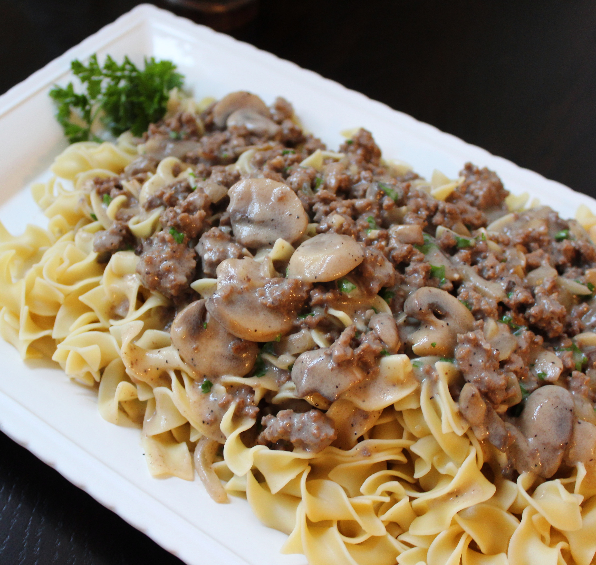

Hamburger Stroganoff

Description
...The flavors blend together to make a rich, tangy, delicious sauce, and a hearty meal. Garnish with additional
sour cream and fresh parsley. -Linzie Smith (Allrecipes)
The ingredients and directions below should yield 4 servings.
Ingredients
- 1 pound ground beef chuck
- 1 (8 ounce) package sliced fresh mushrooms
- 1 onion, chopped
- 2 cloves garlic, minced
- 2 tablespoons all-purpose flour
- 1 (14 ounce) can beef broth
- 1 (10.75 ounce) can condensed cream of mushroom soup
- 2 tablespoons Worcestershire sauce
- 1 teaspoon ground black pepper
- 1/2 teaspoon salt
- 1 (12 ounce) package egg noodles
- 1 cup sour cream
- 2 teaspoons finely grated raw horseradish (Optional)
Steps
- Heat a skillet over medium-high heat. Add beef, mushrooms, onion, and garlic. Saute until beef is browned
and crumbly, 6 to 8 minutes. Add flour; cook and stir until combined, about 2 minutes. Add broth, cream of
mushroom soup, Worcestershire sauce, pepper, and salt. Bring to a boil; reduce heat. Simmer, stirring
occasionally, until flavors blend, about 15 minutes.
- Fill a large pot with lightly salted water and bring to a rolling boil. Stir in egg noodles and return to a
boil. Cook noodles uncovered, stirring occasionally, until tender yet firm to the bite, about 6 minutes.
Drain.
- Combine sour cream and horseradish in a bowl; add to the beef mixture. Stir. Cook until hot, about 5
minutes. Serve over hot cooked egg noodles.